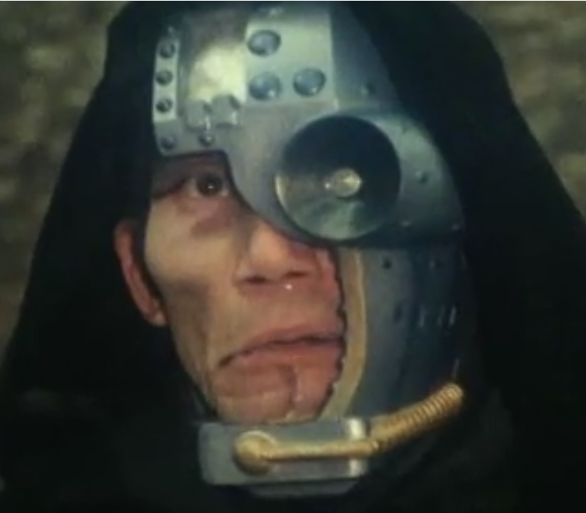

Japonskej Spiderman
Co je to Japonský Spiderman?
Japonský spiderman známý
jako Japanese Spider-Man, nebo Supaidāman
, je pořad z Japonska roku 1978.
Marvel prodal licenci Toei a ti následně vytvořili toto mistrovské dílo.
Dílo má seriál a pár adaptací. Ale nejznámější je seriálem samotným,
kde se tento netradiční hrdina vyznačuje tím, že má gigantického robota,
lana, náramek, auto, vesmírnou lod' a chut' na pomstu.
Možná se ptáte"jak se mohl tradiční Spiderman soupeřit v popularitě s tímto velikánem?".
Historici za hlavní důvod považují pád Sovětského Svazu, kdy již nebyl pro západní blok potřeba.
Tímto pořadem se i isnpirovali Power rangers.
Ohledně seriálu
Pár informací o produkci bylo již zmíněno a tak je přeskočíme. Seriál je 2. hranou adaptací Spidermana a též nejlepší. Kvůli technologiím své doby museli se uskromn'ovat s efekty a tak většihna efektů je opakování záběru, nebo kaskaderské kousky s lanem. Kousky jsou občas obdivuhodné avšak nejvíc se vyznačuje efekt obřího robota, který kvůli krádeži kostýmu museli využít znova a znova v téměř každé epizodě. Seriál má 41 dílů a jeden film. Trvají 20 minut včetně filmu.
Pro jednoduší pochopeni radši uvedu postavy.
Takuya Yamashiro

Jedná se o hlavního hrdinu a jeho konkrétně skrytou identitu. Po příletu vesmírné lodě zjistí, že je vyvolený a že musí porazit zlého Profesora Monstra. Který se chystá zničit svět a zabil jeho otce. Takuya s pomocí vesmírného pavouka Garii, který mu předá jeho síly se vydá na cestu pomsty. Aby ukryl identitu Takuyi, tak vždy za něj předstírá, že je příliš neschopný, na to aby byl Spiderman.
Profesor Monster
Je to hlavní záporák, dobyvatel planet, ničitel světů, tvůrce příšerných bytostí, vrah otce Takuyi a cíl jeho pomsty. Profesor Monster ovládá Iron Cross army, což je jeho elitní armáda cyborgů, kteří mu pomáhají v jeho plánech. Na zemi je už 400 let a nic ho nezastaví v ničení lidských životů.
Spiderman
Takuyova identita s kterou poráží zlo. Jako Spiderman je dobrák, který se nikdy nezastaví a každá špatná věc co se mu stane jen násobí jeho chut' po pomstě. Jeho zbraněmi jsou lana akrobacie, sít', předpovídání budoucnosti, detektor nepřátel, speciální smysly, létající auto a samosebou vesmírná lod', která se dokáže proměnit v robota a jednou ranou sundat cokoliv.
Amazoness
Pravá ruka Profesora Monstra a nejčastější nepřítel Spidermana též si kryje identitu novinářky. Pro Monstra rekrutuje Machinebemi a organizuje všelijaké plány.
Pořad má mnoho dalších postav. Od těch co se objeví na jednu epizodu až na ty co jsou v každé, jako Takuyova přítelkyně, nebo sestra. Avšak plní méně hlavní funkci než výše zmíněné.